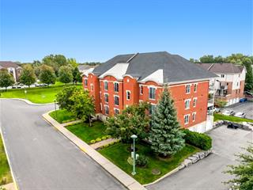

À vendreCondo divise · Centris 24127417
6410, rue
Bernard-Racicot
Appartement 5 · Longueuil (Saint-Hubert)
419 000 $
2chambres
1salle de bain
1 016pi² nets
Le condo
Lumineux, pratique,
près de tout.
Ce 4½ bien entretenu réunit deux chambres, un garage, un rangement intérieur et un foyer au gaz dans un immeuble à la gestion reconnue. À deux minutes à pied du parc de la Cité et près du REM, il place les sentiers, les services et le transport collectif dans votre quotidien.
Caractéristiques
Confort sans compromis.
Superficie nette1 016 pi²
Année de construction2007
Pièces7
StationnementGarage + allée
ConfortFoyer au gaz et climatisation
AccessibilitéPlateforme élévatrice
ParticularitésAnimaux acceptés · borne électrique
Occupation65 jours après acceptation
Valeur et frais
Repères financiers.
Évaluation municipale 2025373 000 $
Taxes municipales2 511 $
Taxes scolaires228 $
Stationnement extérieur additionnel250 $ / mois, si disponible
Localisation